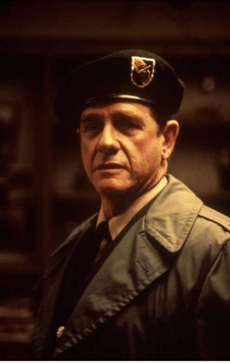

Szereplői
-
John J Rambo
- Színész: Sylvester Stallone
- Magyar hangja: Gáti Oszkár

-
Will Teasle seriff
- Színész: Brian Dennehy
- Magyar hangja: Kránitz Lajos

-
Samuel Trautman ezredes
- Színész: Richard Crenna
- Magyar hangja: Versényi László

-
Arthur Galt seriffhelyettes
- Színész: Jack Starrett
- Magyar hangja: Cs. Németh Lajos

-
Lester seriffhelyettes
- Színész: Alf Humphreys
- Magyar hangja: Holl Nándor

-
Ward seriffhelyettes
- Színész: Chris Mulkey
- Magyar hangja: Konrád Antal
-
Mitch seriffhelyettes
- Színész: David Caruso
- Magyar hangja: Schnell Ádám
-
Shingleton seriffhelyettes
- Színész: David L. Crowley
- Magyar hangja: Balázsi Gyula
-
Balford seriffhelyettes
- Színész: Michael Talbott
- Magyar hangja: F. Nagy Zoltán

-
Orval Kellerman
- Színész: John McLiam
- Magyar hangja: Dobránszky Zoltán
-
Dave Kern állami rendőrparancsnok
- Színész: Bill McKinney
- Magyar hangja: Kárpáti Tibor
-
Clinton Morgan hadnagy
- Színész: Patrick Stack
- Magyar hangja: Varga Tamás